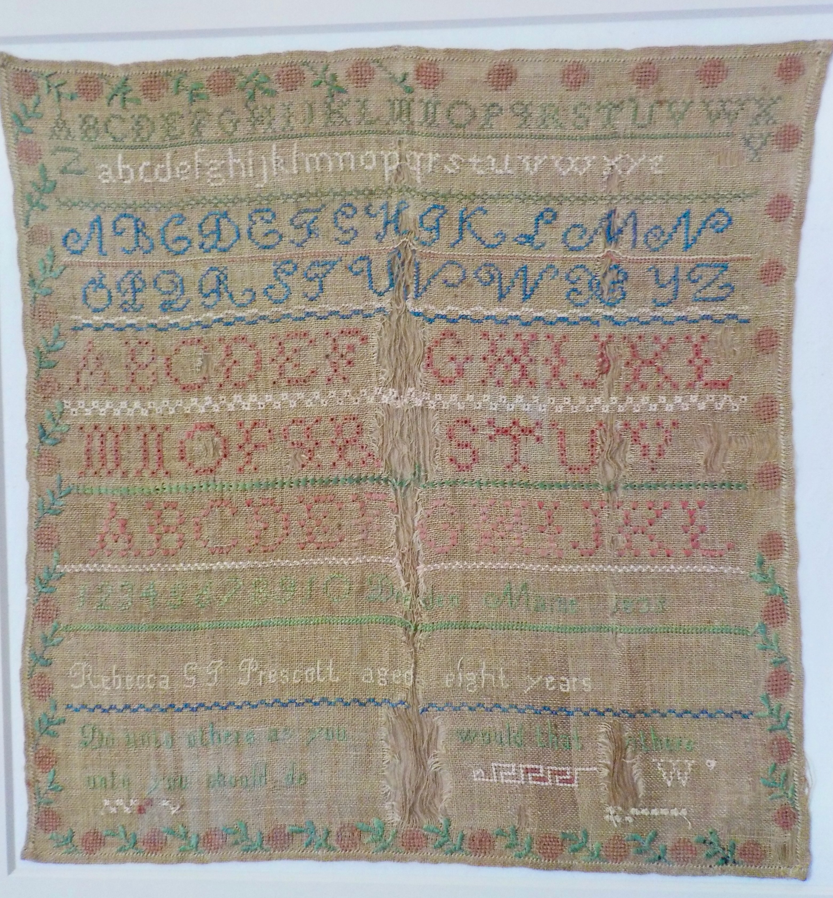

and Finalist — Historical Fiction & Best Educational Categories
The Prescott Girls
A historically based middle-grade novel inspired by real schoolgirl samplers stitched by young girls in 1830s Maine. Drawing on original artifacts, family history, and the lives of the Prescott sisters who lived in the Old Pownalborough Court House in Dresden, the story brings to life a world of river towns, wagon journeys, and the everyday courage of children growing up in a changing young nation.

Three sisters. One letter. A quiet stand.
In 1834, after the loss of their father and the sale of their home, Beckie, Louisa, and Sallie Prescott travel by wagon to the old Pownalborough Courthouse in Dresden, Maine, where their family must begin again. The old courtroom becomes their home, the wide pine floors echo with new footsteps, and the river beyond the hill carries news from a wider world.
When a letter arrives from their friend Hannah in Philadelphia, it brings more than friendly words. It carries a challenge: to think about how sugar is made by enslaved people far from their quiet Maine home, and to decide whether even young girls can choose differently. Guided by their stitching, their lessons, and the people who pass through their home, the sisters discover that courage may be quiet, but it is never small.
Drawn from real nineteenth-century schoolgirl samplers, letters, and the lives of the girls who once lived in the courthouse, The Prescott Girls: A Letter from Philadelphia is a story of conscience, family, and the power of young voices to leave their mark on history, one stitch, one letter, and one brave word at a time.
